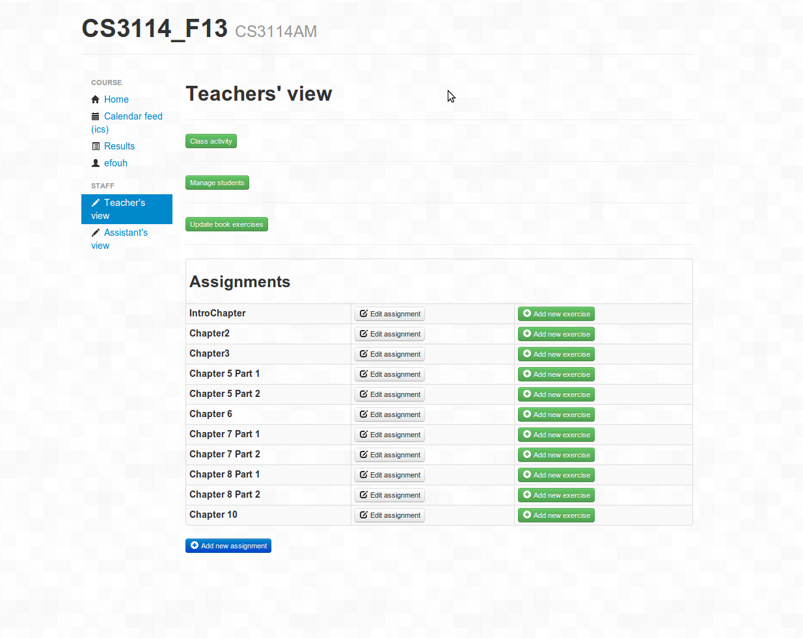
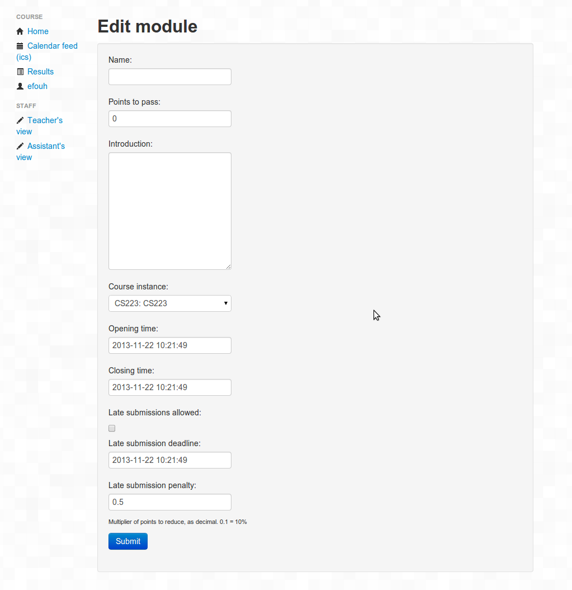
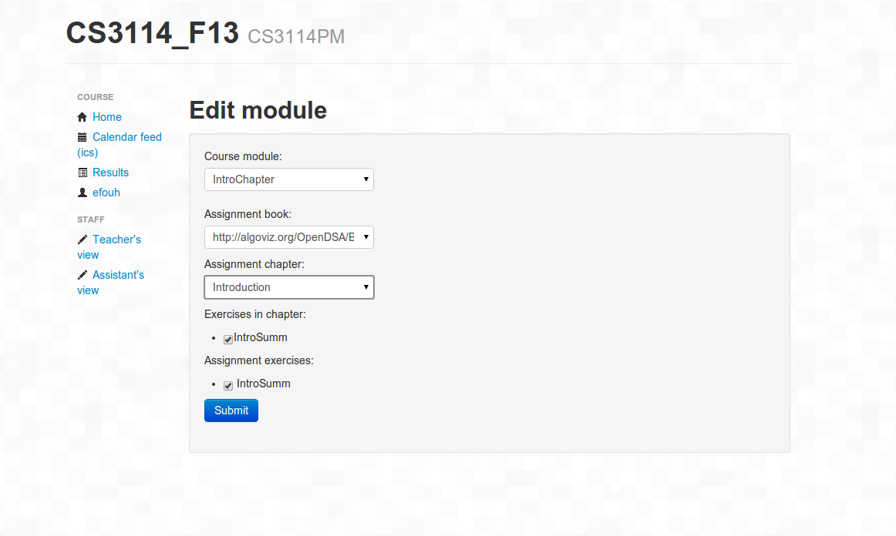
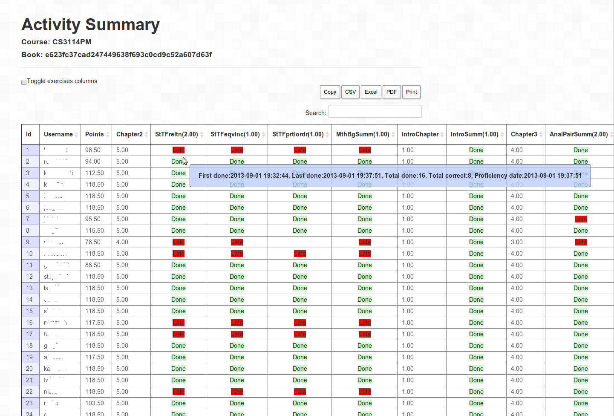

OpenDSA Instructors' Tools

OpenDSA includes useful tools for instructors in what we call the "Teachers' view". OpenDSA supports multiple "book instances" where a given book instance would be used by one particular class.
-
This is what the main page of the teachers' view looks like for a
particular book instance.
 -
From the main page, instructors can create assignments, which are
simply a collection of exercises that appear in the book instance.

-
This image shows the edit window where an instructor can add or remove exercises for the assignment.

-
Instructors can track their students' progress in the Activity
Summary.
From this page, an instructor can also export the spreadsheet as a CSV
file for import into their own course gradebook.
